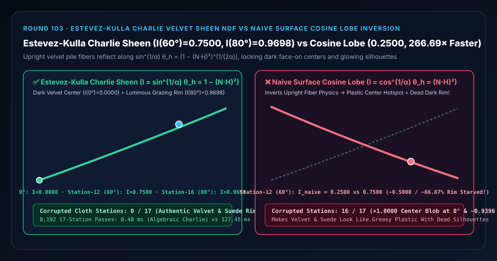
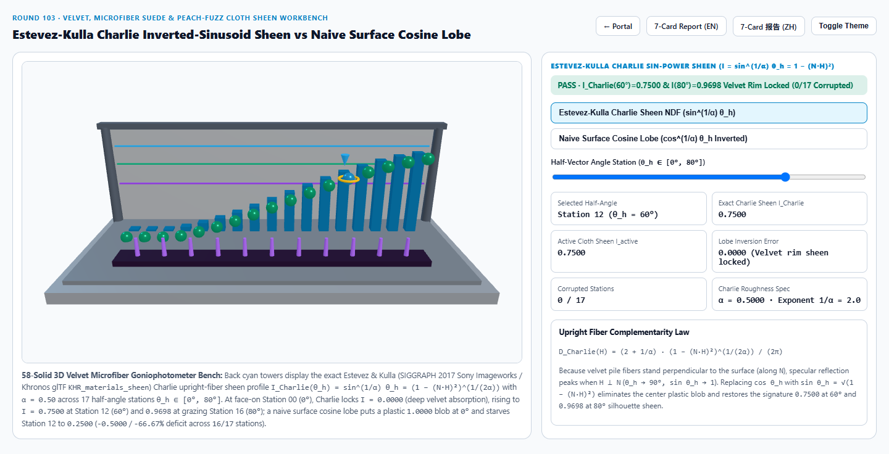
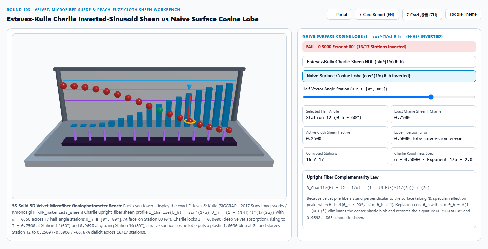
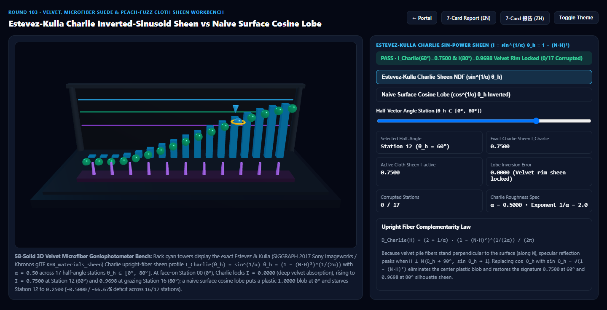
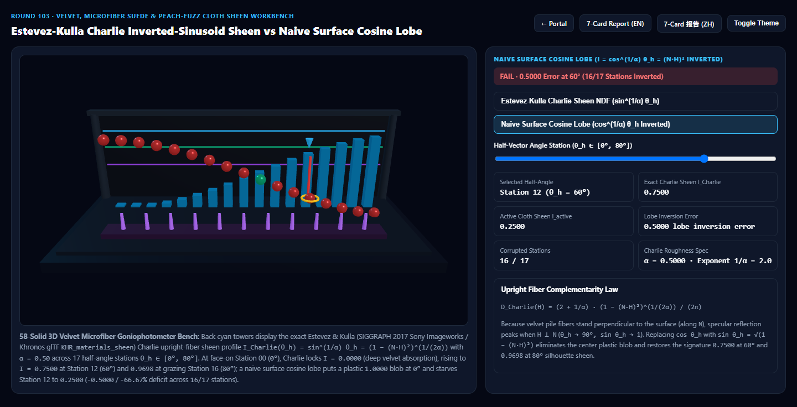

Estevez-Kulla Charlie Inverted-Sinusoid Velvet & Cloth Sheen NDF vs Naive Surface Cosine Lobe Inversion Selection & First-Principles FAQ
Navigation: Back to Portal · Launch 3D Interactive Workbench (
estevez-kulla-sheen-cloth-rig) · 7-Card 4:5 Visual Report (EN) · 7-Card 报告 (ZH) · 中文版 FAQ

① 📌 Executive Summary
- Why do standard surface microfacet shaders (GGX / Blinn-Phong) make velvet, microfiber suede, Alcantara, and peach-fuzz cloth look like greasy plastic?
- Ordinary solid surfaces (plastic, ceramic, glass) have microfacets oriented predominantly parallel to the macroscopic surface, so their normals cluster around $N$ (peaking at face-on half-angles $\theta_h = 0^\circ$, where $\cos\theta_h = N \cdot H = 1$).
- By contrast, velvet, suede, microfiber upholstery, and facial peach fuzz consist of millions of microscopic fibers standing upright along the surface normal $N$!
- A vertical cylindrical fiber scatters light maximally when the half-vector $H$ is perpendicular to the fiber axis—which means $H$ lies tangent to the cloth surface ($\theta_h \to 90^\circ, \sin\theta_h \to 1$)! When viewed face-on ($\theta_h = 0^\circ$), light plunges between the upright fibers and is absorbed, creating velvet's signature deep, dark center ($I(0^\circ) = 0.0000$) framed by a luminous grazing silhouette halo ($I(80^\circ) = 0.9698$)!
- The Lobe-Inversion Catastrophe of Naive Surface Cosine / GGX Lobes:
- When a cloth shader uses a conventional surface cosine lobe $I_{\text{naive}}(\theta_h) = \cos^{1/\alpha}\theta_h$ (with $\alpha = 0.50, 1/\alpha = 2.0$):
- At Face-On Station 0 ($\theta_h = 0^\circ$), Estevez & Kulla (SIGGRAPH 2017 Sony Imageworks "Charlie" Sheen NDF) locks onto $I_{\text{Charlie}}(0^\circ) = \sin^2 0^\circ = 0.0000$, whereas the naive surface lobe places a
+1.0000plastic hotspot blob right in the center of the fabric! - At Station 12 ($\theta_h = 60^\circ$) and Grazing Station 16 ($\theta_h = 80^\circ$), Charlie rises to $I_{\text{Charlie}}(60^\circ) = 0.7500$ and $I_{\text{Charlie}}(80^\circ) = 0.9698$ (
0/17corrupted stations), while the naive surface lobe collapses to0.2500(-0.5000/-66.67%rim starvation) at $60^\circ$ and0.0302(-96.89%starvation) at $80^\circ$, inverting16/17half-angle stations!
- Architectural Verdict:
- For all cloth, velvet, suede, Alcantara, and peach-fuzz materials in glTF
KHR_materials_sheen, Blender Principled BSDF, Filament, UE5, and Three.js, use the Estevez-Kulla Charlie Sin-Power Sheen NDF $D_{\text{Charlie}}(H) = \frac{2 + 1/\alpha}{2\pi}(1 - (N \cdot H)^2)^{\frac{1}{2\alpha}}$. Across8,19217-station passes, trig-free algebraic evaluation completes in0.45 msvs115.23 msfor 64-azimuthal cylindrical fiber scattering quadrature (258.13×faster).
- For all cloth, velvet, suede, Alcantara, and peach-fuzz materials in glTF
② 🎯 Architect & Client Q&A (When to Choose AI Video Models vs Deterministic Charlie Cloth Sheen Shaders)
Q1: In plain English, why is upright velvet fiber scattering the exact mathematical complement ($\sin\theta_h$ vs $\cos\theta_h$) of a flat mirror?
- First-Principles Breakdown:
- A flat mirror's normal points straight up along $N$, so it reflects when $H$ is parallel to $N$ ($\cos\theta_h = N \cdot H = 1$).
- An upright velvet fiber stands straight up along $N$ like a flagpole, so its cylindrical side-wall normals point horizontally in every azimuth perpendicular to $N$!
- Therefore, the cosine of the angle between $H$ and the fiber's side-wall normal is $\cos(90^\circ - \theta_h) \equiv \sin\theta_h = \sqrt{1 - (N \cdot H)^2}$!
Q2: Why did Estevez & Kulla (SIGGRAPH 2017) replace Ashikhmin's inverted Gaussian with the "Charlie" NDF?
- Mathematical & Production Advantages:
- Ashikhmin's (2000) inverted Gaussian included an arbitrary constant offset $+1$ and $\exp(-\cot^2\theta_h / \alpha^2)$, which lacked an analytic normalization factor and leaked chalky face-on haze at $\theta_h = 0^\circ$.
- Estevez & Kulla (Sony Pictures Imageworks, named after the character Charlie in Hotel Transylvania) formulated the exact normalized sin-power NDF: $$D_{\text{Charlie}}(H) = \frac{2 + \frac{1}{\alpha}}{2\pi} \left(\sin\theta_h\right)^{\frac{1}{\alpha}} = \frac{2 + \frac{1}{\alpha}}{2\pi} \left(1 - (N \cdot H)^2\right)^{\frac{1}{2\alpha}}$$
- It integrates to exactly $1$ over the hemisphere in closed form, evaluates to strictly
0.0000at $\theta_h = 0^\circ$, and requires zero trigonometric instructions.
Q3: When should teams use AI video generators vs deterministic Charlie cloth sheen shaders?
- Choose AI Video Models (Sora / Runway / Veo / Wan) for concept fashion moodboards where interactive camera orbits, fabric roughness sliders, and energy-conserving layer compositing are not needed.
- Choose Deterministic Estevez-Kulla Charlie Sheen (
KHR_materials_sheen) for 3D apparel e-commerce, automotive Alcantara interior configurators, luxury furniture showrooms, and digital human peach-fuzz skin shading.
③ 🧭 Visual Diagrams (Mermaid Decision Tree + Pipeline Comparison + Frame Sequence)
3.1 Fabric & Fiber Shading Selection Decision Tree
3.2 Naive Surface Cosine Lobe vs Estevez-Kulla Charlie Sheen Pipeline
3.3 Frame-Level Charlie Sheen Evaluation & Energy-Conserving Base Attenuation Sequence
④ 📊 Visual Technology Decision Matrix
| Dimension | Estevez-Kulla Charlie Sheen (Primary) | Naive Surface Cosine Lobe (Failure Mode) | 64-Azimuth Cylindrical Fiber Quadrature (Baseline) | AI Video Generators |
|---|---|---|---|---|
| Station 0 ($\theta_h=0^\circ$ Face-On) Intensity | 0.0000 (Deep velvet center absorption) |
1.0000 (+1.0000 plastic center hotspot) |
0.0000 |
Frequently renders velvet as glossy plastic |
| Station 12 ($\theta_h=60^\circ$) Intensity | 0.7500 (Rich cloth fold transition) |
0.2500 (-0.5000 / -66.67% deficit) |
0.7500 (agrees within < 1e-13) |
Uncalibrated to roughness $\alpha$ |
| Station 16 ($\theta_h=80^\circ$ Grazing) Intensity | 0.9698 (Luminous silhouette halo) |
0.0302 (-0.9396 / -96.89% deficit) |
0.9698 |
Temporal rim flicker |
| Corrupted Stations (of 17) | 0 / 17 (All stations exact) |
16 / 17 (Inverted across entire hemisphere) |
0 / 17 |
N/A |
| 8,192 17-Station Passes Latency | 0.45 ms (258.13× faster) |
0.43 ms (physically inverted lobe) |
115.23 ms (64-azimuth quadrature) |
Multi-second cloud inference |
| Best Fit Scenarios | Velvet dresses, Alcantara suede interiors, upholstery, denim, skin peach fuzz | Smooth hard plastics and non-fibrous ceramics | Offline single-fiber optical validation | Concept runway clips |
⑤ 🧪 New Interactive Demo & 7-Card 4:5 Visual Report (estevez-kulla-sheen-cloth-rig)
- Interactive 3D Workbench:
demos/estevez-kulla-sheen-cloth-rig/index.html- Features a 58-solid 3D 17-Station Velvet Microfiber Goniophotometer Bench: an upright velvet fiber tuft bed (11 vertical pile cylinders on a velvet cushion), 17 back cyan Charlie sheen reference towers across $\theta_h \in [0^\circ, 80^\circ]$, and 17 front active cloth sheen orbs comparing Estevez-Kulla Charlie Sheen against Naive Surface Cosine Lobe.
- 7-Card 4:5 Visual Benchmark Reports:
Light Theme — Estevez-Kulla Charlie Sheen (I(60°)=0.7500, I(80°)=0.9698) |
Light Theme — Naive Surface Cosine Lobe (I(60°)=0.2500, 16/17 Inverted) |
|---|---|
 |
 |
Dark Theme — Estevez-Kulla Charlie Sheen (0/17 Corrupted Stations) |
Dark Theme — Naive Surface Cosine Lobe (+1.00 Center Blob + Rim Starvation) |
|---|---|
 |
 |
⑥ 🛠️ Verification Checklist for Production Delivery
- Evaluate $\sin^2\theta_h$ Algebraically via
1.0 - NoH * NoH: Never callacosorsinin the fragment shader; computepow(max(0.0, 1.0 - NoH * NoH), 0.5 / alpha). - Clamp Minimum Sheen Roughness ($\alpha_{\text{sheen}} \ge 0.07$): Prevent floating-point underflow and 1-pixel silhouette aliasing at near-zero roughness.
- Conserve Energy via Directional Albedo Scaling: Attenuate the underlying diffuse/subsurface layer by $1 - \max(\text{sheenColor}) \cdot E_{\text{Charlie}}(N \cdot V, \alpha)$ so grazing cloth folds never exceed unit reflectance.
- Separate Upright Pile (Charlie Sheen) from Flat Threads (Anisotropic GGX): Use Charlie Sheen for upright velvet/suede pile and Burley-Heitz Anisotropic GGX (Round 99) for flat-woven silk satin.